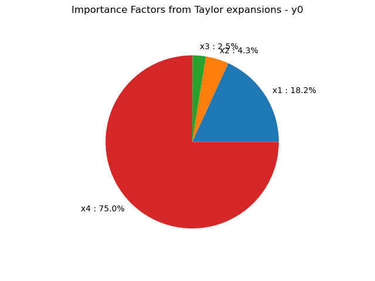

Note
Click here to download the full example code
Estimate moments from Taylor expansions¶
In this example we are going to estimate mean and standard deviation of an output variable of interest thanks to the Taylor variance decomposition method of order 1 or 2.
from __future__ import print_function
import openturns as ot
import openturns.viewer as viewer
from matplotlib import pylab as plt
ot.Log.Show(ot.Log.NONE)
Create a composite random vector
ot.RandomGenerator.SetSeed(0)
input_names = ['x1', 'x2', 'x3', 'x4']
myFunc = ot.SymbolicFunction(input_names,
['cos(x2*x2+x4)/(x1*x1+1+x3^4)'])
R = ot.CorrelationMatrix(4)
for i in range(4):
R[i, i - 1] = 0.25
distribution = ot.Normal([0.2]*4, [0.1, 0.2, 0.3, 0.4], R)
distribution.setDescription(input_names)
# We create a distribution-based RandomVector
X = ot.RandomVector(distribution)
# We create a composite RandomVector Y from X and myFunc
Y = ot.CompositeRandomVector(myFunc, X)
We create a Taylor expansion method to approximate moments
taylor = ot.TaylorExpansionMoments(Y)
get 1st order mean
print(taylor.getMeanFirstOrder())
Out:
[0.932544]
get 2nd order mean
print(taylor.getMeanSecondOrder())
Out:
[0.820295]
get covariance
print(taylor.getCovariance())
Out:
[[ 0.0124546 ]]
draw importance factors
taylor.getImportanceFactors()
[x1 : 0.181718, x2 : 0.0430356, x3 : 0.0248297, x4 : 0.750417]
draw importance factors
graph = taylor.drawImportanceFactors()
view = viewer.View(graph)

Get the value of the output at the mean point
taylor.getValueAtMean()
[0.932544]
Get the gradient value of the output at the mean point
taylor.getGradientAtMean()
[[ -0.35812 ]
[ -0.0912837 ]
[ -0.0286496 ]
[ -0.228209 ]]
Get the hessian value of the output at the mean point
taylor.getHessianAtMean()
plt.show()
Total running time of the script: ( 0 minutes 0.047 seconds)